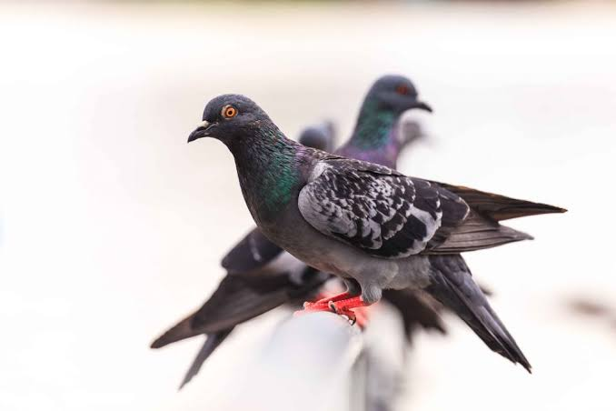

Pigeon
Birds
Columbidae is a bird family containing the pigeons and doves. It is the only family in the order Columbiformes. These are stout-bodied birds with short necks, and short slender bills that in some species feature fleshy ceres. They primarily feed on seeds, fruits, and plants
Scientific name: Columbidae
Clutch size: Marquesan imperial pigeon: 1
Class: Aves
Family: Columbidae; Leach, 1820
Mass: Marquesan imperial pigeon: 900 g, Western crowned pigeon: 2.1 kg
Length: Marquesan imperial pigeon: 55 cm, Western crowned pigeon: 70 cm, Dwarf fruit dove: 13 – 15 cm
Pigeon, any of several hundred species of birds constituting the family Columbidae (order Columbiformes). Smaller forms are usually called doves, larger forms pigeons. An exception is the white domestic pigeon, the symbol known as the “dove of peace.”
Pigeons occur worldwide except in the coldest regions and the most remote islands.
About 250 species are known; two-thirds of them occur in tropical Southeast Asia, Australia, and the islands of the western Pacific, but the family also has many members in Africa and South America and a few in temperate Eurasia and North America.
All members of the family suck liquids, rather than sip and swallow as do other birds, and all pigeon parents feed their young “pigeon’s milk,” the sloughed-off lining of the crop, the production of which is stimulated by the hormone prolactin. The nestling obtains this “milk” by poking its bill down the parent’s throat.
Pigeons are gentle, plump, small-billed birds with a skin saddle (cere) between the bill and forehead. All pigeons strut about with a characteristic bobbing of the head. Because of their long wings and powerful flight muscles, they are strong, swift fliers.
Pigeons are monogamous; i.e., they mate for life, and the survivor accepts a new mate only slowly. The female lays two glossy white eggs in a flimsy nest that barely holds them. The female generally incubates the eggs by night, the male by day. The incubation period is 14 to 19 days, but the young are cared for in the nest for another 12 to 18 days.
Biology of Pigeon
For food
Pigeons are also bred for meat, generally called squab and harvested from young birds. Pigeons grow to a very large size in the nest before they are fledged and able to fly, and in this stage of their development (when they are called squabs) they are
prized as food. For commercial meat production a breed of large white pigeon, named "King pigeon," has been developed by selective breeding. Breeds of pigeons developed for their meat are collectively known as utility pigeons.
Exhibition breeds
Pigeon fanciers developed many exotic forms of pigeon. These are generally classed as fancy pigeons. Fanciers compete against each other at exhibitions or shows and the different forms or breeds are judged to a standard to decide who has the best bird.
Among those breeds are the English carrier pigeons, a variety of pigeon with wattles and a unique, almost vertical, stance (pictures).
There are many ornamental breeds of pigeons, including the "Duchess" breed, which has as a prominent characteristic feet that are completely covered by a sort of fan of feathers. The fantail pigeons are also very ornamental with their fan-shaped tail feathers.
Cognitive science
Pigeons have been trained to distinguish between cubist and impressionist paintings, for instance. In Project Sea Hunt, a US coast guard search and rescue project in the 1970s/1980s, pigeons were shown to be more effective than humans in spotting
shipwreck victims at sea. Research in pigeons is widespread, encompassing shape and texture perception, exemplar and prototype memory, category-based and associative concepts, and many more unlisted here (see pigeon intelligence).
Pigeons are able to acquire orthographic processing skills, which form part of the ability to read, and basic numerical skills equivalent to those shown in primates.
Illegal predator killing by enthusiasts
In the United States, some pigeon keepers illegally trap and kill hawks and falcons to protect their pigeons. In American pigeon-related organizations, some enthusiasts have openly shared their experiences of killing hawks and falcons, although this is frowned upon by the majority of fanciers.
None of the major clubs condone this practice. It is estimated that almost 1,000 birds of prey have been killed in Oregon and Washington, and that 1,000–2,000 are killed in southern California annually.
In June 2007, three Oregon men were indicted with misdemeanour violations of the Migratory Bird Treaty Act for killing birds of prey. Seven Californians and a Texan were also charged in the case.
In the West Midlands region of the United Kingdom pigeon fanciers have been blamed for a trap campaign to kill peregrine falcons. Eight illegal spring-loaded traps were found close to peregrine nests and at least one of the protected birds died.
The steel traps are thought to have been set as part of a "concerted campaign" to kill as many of the birds as possible in the West Midlands.
Feral pigeons
Many domestic birds have escaped or been released over the years, and have given rise to the feral pigeon. These show a variety of plumages, although some look very much like pure rock pigeons.
The scarcity of the pure wild species is partly due to interbreeding with feral birds. Domestic pigeons can often be distinguished from feral pigeons because they usually have a metal or plastic band around one (sometimes both) legs which shows, by a number on it, that they are registered to an owner.